Checkout - Creating a reusable payment application
American Airlines website
The Problem
American Airlines has many different applications of how to make purchases online.
- Leads to a lot of tech debt and inconsistent experiences.
- Most haven't been updated in years including the primary one in booking.
- The current page is outdated and can be optimized.
The Solution
Create a new checkout application that works across all of American Airlines products.
Our main objectives were:
- Create a reusable and scalable checkout page.
- Reduce errors on the page.
- Increase usage of credits and miles.
Outcomes:
- 40 different flows now use the checkout app.
- 10.5% reduction in the top 20 errors on the checkout page
- .44% increase in conversion
- 5% increase in ancillary revenue
- Average load time was reduced by 3 seconds
Discovery / Define
Design Thinking
I kicked off the project by doing multiple design thinking sessions with key stakeholders to start to frame the problem and create goalposts that we wanted to hit with the change in the page. The main objectives for the new booking engine were to increase the incremental revenue that we get from the products we already offer and increase loyalty to the American Airlines brand, either having people join or see the value of becoming more loyal to the airline.
We did a competitive analysis into a buy a feature session and then used the data from those two to map the ideas on an importance difficulty matrix. The initial design thinking sessions helped us decide what success looked like for the project and more concrete goals to achieve the objectives that American Airlines was looking for.
New rough booking flow
The sessions ended with us having some general goals for the search team to go after and a rough diagram of the vision for what the stakeholders would want the booking flow to be in the future. Our initial design thinking sessions we did as a team helped align all the teams involved on a unified vision for the future of booking on aa.com.
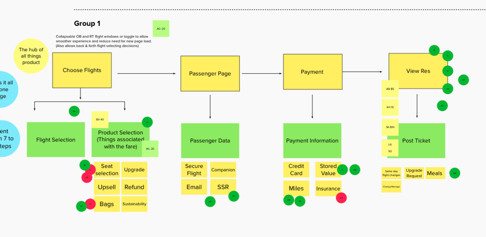
Competitive Analysis
I conducted a competitive analysis of major airlines and leading e-commerce platforms to identify effective checkout patterns and pain points. By comparing user flows, pricing displays, and payment methods, I uncovered best practices that improve clarity and reduce friction. These insights directly informed the design of a new checkout experience that feels modern, intuitive, and aligned with user expectations.
We looked at other major airlines to see what they were doing, but we also looked at large e-commerce sites to see what we can learn from them also.
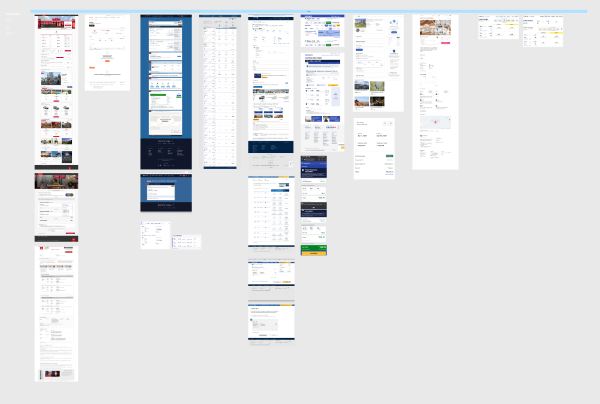
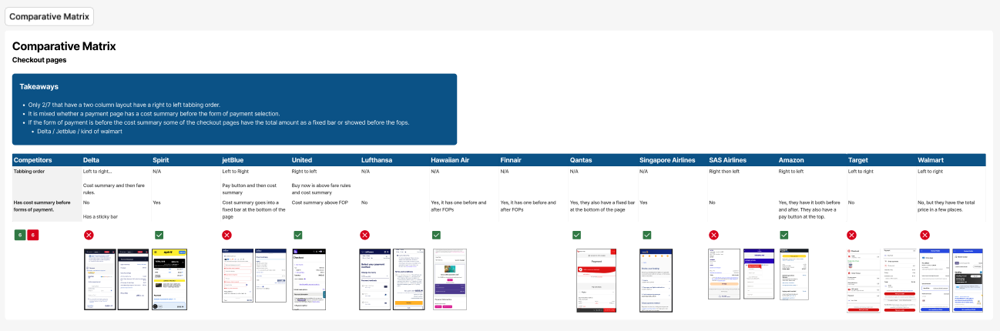
Problems that we uncovered
Cognitive load of the current page is very high
Components on the page don't dynamically reload.
There are hundreds of different products that all have their own checkout page.
Design / Deliver
Wireframes
Wireframes for the checkout app

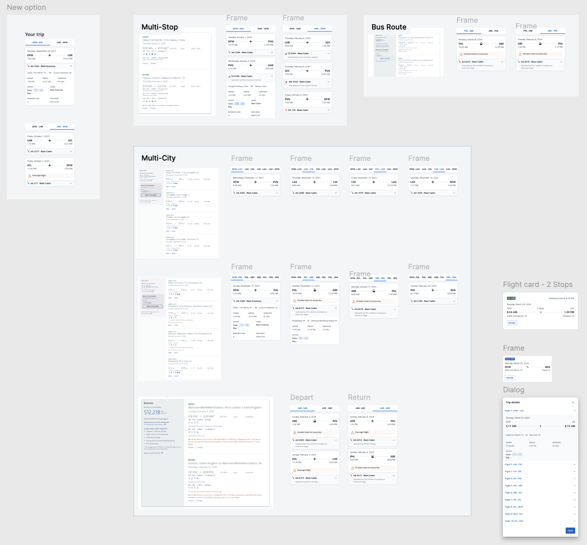
Design & Validation
In my role, I led the creation of wireframes for a new checkout experience, starting with low-fidelity sketches to align on structure and user flow before moving into interactive prototypes. These wireframes became a shared reference point across teams, helping me collaborate more effectively with product managers to clarify requirements, with developers to confirm feasibility, and with business stakeholders to ensure alignment with goals and constraints. Because the ideas were visual and tangible early on, we were able to surface questions, get feedback, and make decisions quickly. The wireframes also allowed me to run usability tests with users early in the process, validating assumptions and refining the flow before any development work began, which ultimately reduced rework and improved cross-functional alignment.
Legacy designs
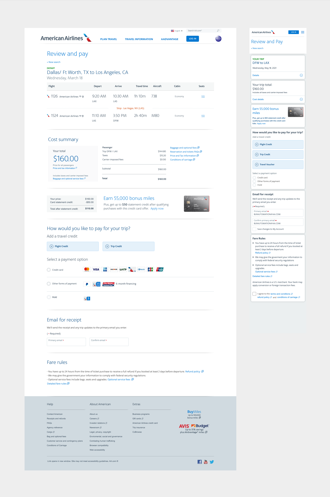
Redesigned Checkout
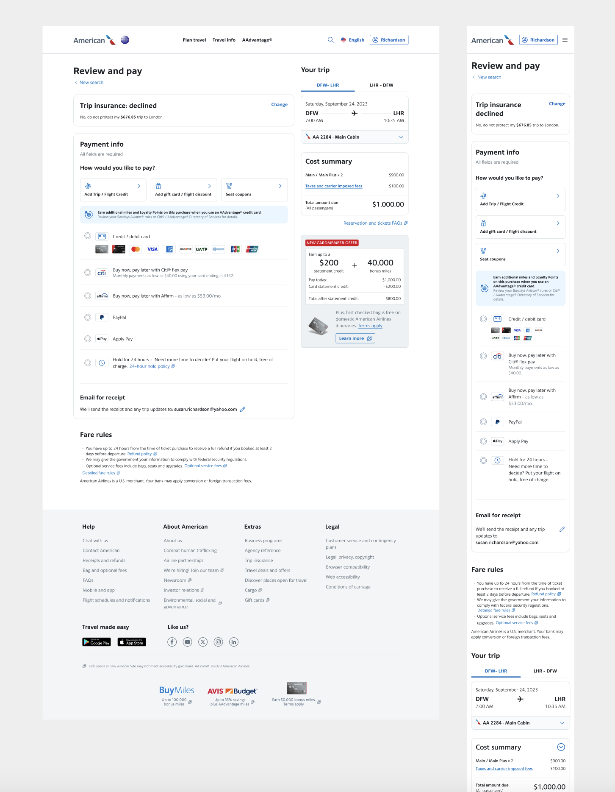
Form Container Components
One of the enhancements I wanted to make to the American Airlines checkout page was using progressive disclosure on the form. Looking at other e-commerce companies we were able to see how they were building their payment form with steps. Breaking the large payment form into many smaller forms allows us to improve both the front-end UX and the back-end architecture.
Some of the benefits:
- Breaking up a very long form into smaller more consumable forms.
- Smaller chunks to do error validation on.
- Dynamically updating components.
- Allowing trip offers to be combined with other payment methods or credits.
We started by breaking the payment form into two steps as the MVP, but then added more steps to include all the different sub-forms that are required for various use cases.
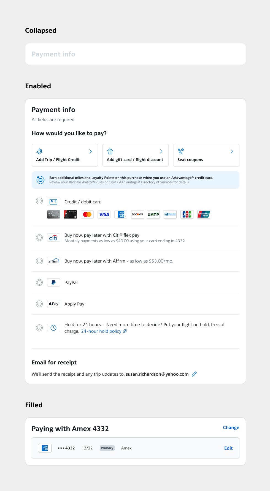
Payment form
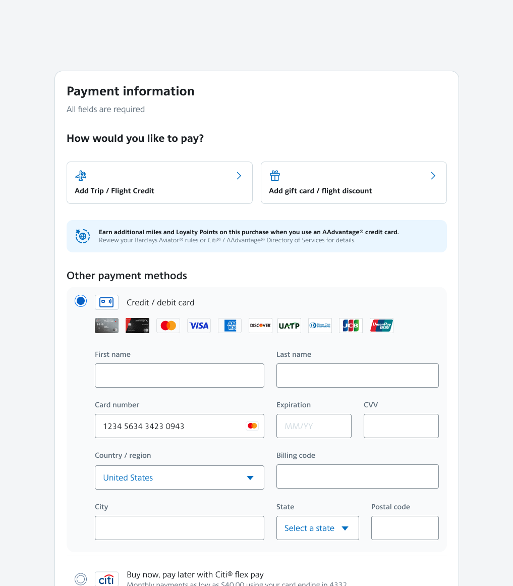
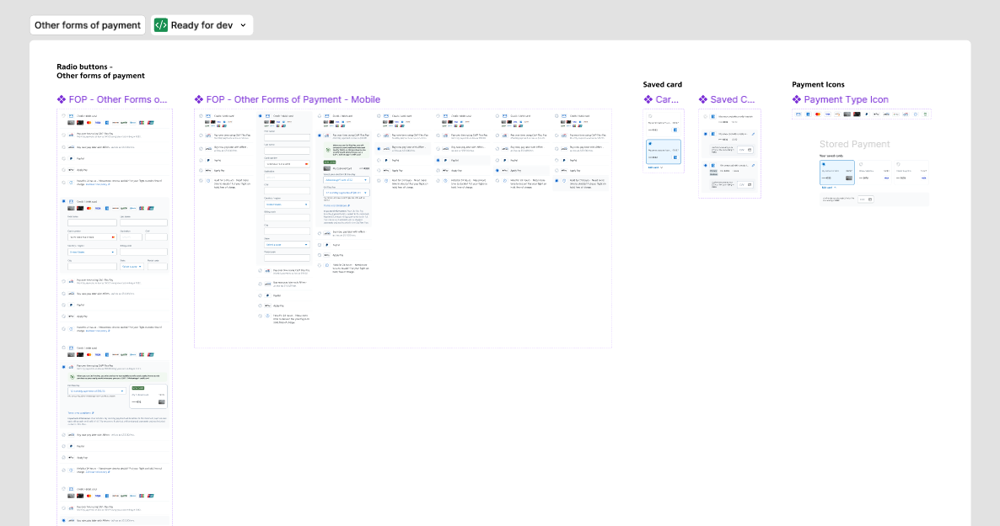
Saved Cards
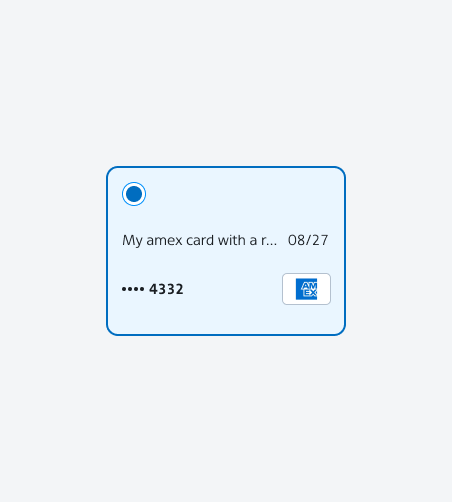
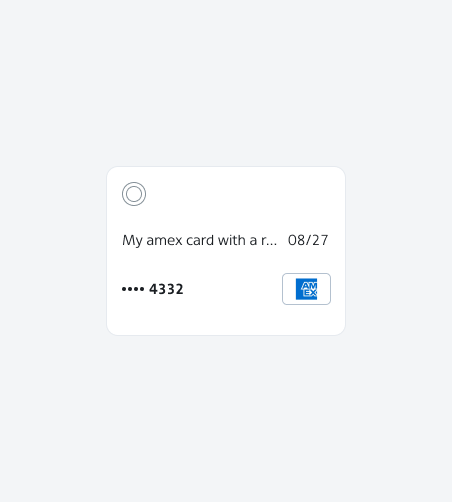
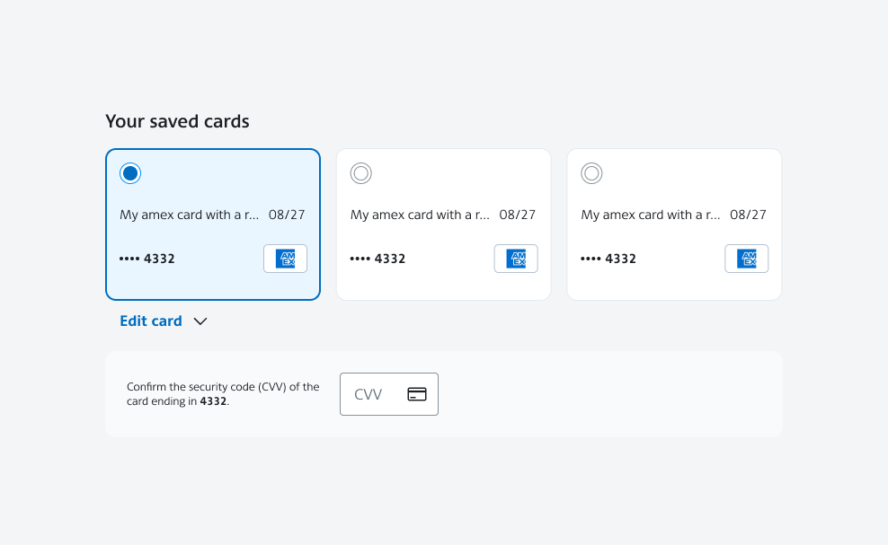
New flight card
Part of the new checkout app was creating a new flight card component. This is a component that appears in many places around aa.com. It took collaboration across many designers to align on the new direction for the card. It took many months of conversation and designing to come to a good solution.
Segment card
The top tabs of the card are the slices and then each card is the segment of the trip.
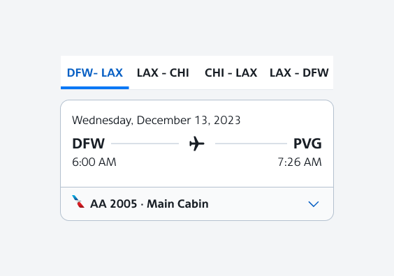
Expanded view
Includes all the details that users would see on each slice of their flight search.
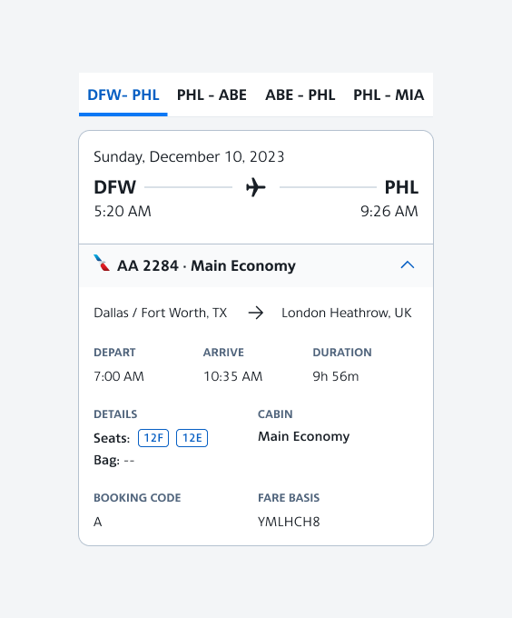
Code share flights
If a flight is a code share (half AA, half another airline) we wanted to make it more clear that the user will be traveling with another airline for that portion of the trip.
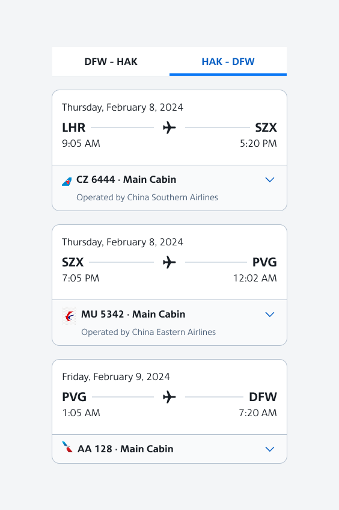
Other transportation
At American Airlines we also offer tickets with buses and train legs. So we would need to make it clear to people that they are purchasing a ticket that could be a bus and a flight.
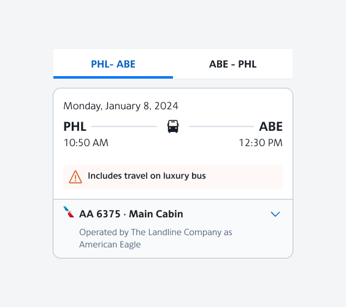
Other payment services
- All additional journeys
- Modal
- QR code on the kiosk
Final Outcome
40 journeys so far have adopted the checkout app
Increased checkout conversion by .44%
5% increase in ancillary revenue
10.5% reduction in the top 20 errors on the checkout page
Average load time was reduced by 3 seconds
Thanks for reading!
Want to talk about this project, or one like it?
Email meNext case study
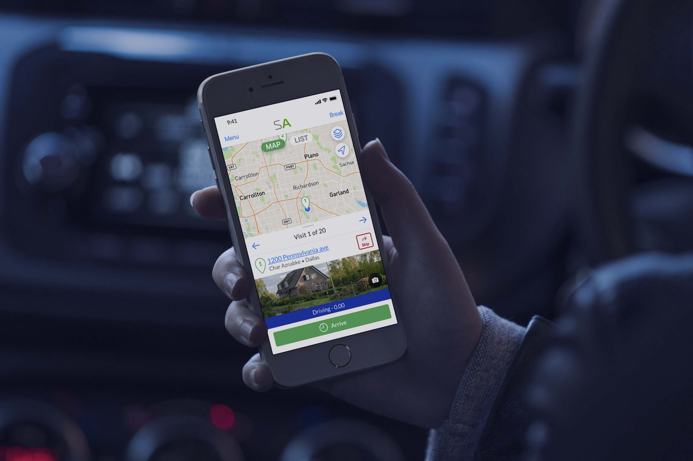
Service Autopilot - Team App
A 0→1 mobile app that streamlined how service teams manage tasks, schedules, and field operations.